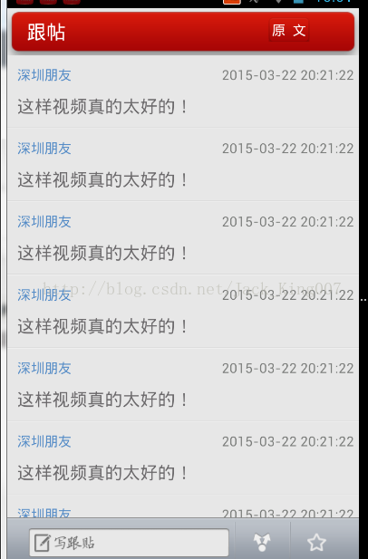

高仿新闻教程回复内容界面的加入（6）
这一篇是最后一篇了，UI的最后一片，当UI完成以后，这才是完成了整个APP的一半项目..骚年继续努力吧

因为这个布局，和前面我所说的新闻布局几乎是一模一样的，这一节主要讲解的是 include的用法，和一个样式如果都是一样的话可以抽取出来，放到一起去。
大家可以先看看 include
<include
android:id="@+id/comments_reply_frame"
android:layout_width="fill_parent"
android:layout_height="wrap_content"
android:layout_alignParentBottom="true"
layout="@layout/reply_frame" />其中最重要的属性 layout="@layout/reply_frame" /> laout开头的属性是很少见的 然后再通过 layout去寻找布局 其他的属性也就是 组件在当前布局所拥有的属性
include 意思包括 如果当前把这个布局给抽离出去的时候，想用他就可以直接包括 提高了代码的重用度。
而关于 一些组件有些属性是一样的 比如宽高，文字大小 都可以抽离出来当作一个样式 style 读者如果想详细了解
可以点击 我以前写的一片文章
整个布局就是
<?xml version="1.0" encoding="UTF-8"?> <RelativeLayout xmlns:android="http://schemas.android.com/apk/res/android" android:id="@+id/comments_layout" android:layout_width="fill_parent" android:layout_height="fill_parent" android:background="@drawable/main_background" > <RelativeLayout android:id="@+id/comments_titlebar_layout" android:layout_width="fill_parent" android:layout_height="wrap_content" android:background="@drawable/titlebar_background" android:layout_alignParentTop="true"> <TextView android:id="@+id/comments_titlebar_title" android:layout_width="wrap_content" android:layout_height="wrap_content" android:layout_marginLeft="20.0dip" android:layout_marginTop="10.0dip" android:textSize="20.0sp" android:textColor="@android:color/white" android:text="跟帖" /> <Button android:id="@+id/comments_titlebar_news" android:layout_width="wrap_content" android:layout_height="wrap_content" android:layout_alignParentRight="true" android:layout_marginRight="50.0dip" android:layout_marginTop="9.0dip" android:background="@drawable/newsdetails_titlebar_comments_background" android:textColor="@android:color/white" android:textSize="14.0sp" android:text="原 文" /> <ProgressBar android:id="@+id/comments_titlebar_progressbar" android:layout_width="wrap_content" android:layout_height="wrap_content" android:layout_marginLeft="10.0dip" android:layout_marginTop="18.0dip" android:visibility="gone" android:layout_toRightOf="@id/comments_titlebar_title" style="\?android:attr/progressBarStyleSmall" /> </RelativeLayout> <ListView android:id="@+id/comments_list" android:layout_width="fill_parent" android:layout_height="wrap_content" android:layout_above="@+id/comments_reply_frame" android:layout_below="@id/comments_titlebar_layout" android:layout_marginTop="-12.0dip" android:scrollbars="none" android:fadingEdge="none" android:drawSelectorOnTop="false" android:listSelector="@drawable/newslist_item_selector" android:cacheColorHint="#00000000" android:divider="@drawable/list_separator_line" /> <include android:id="@+id/comments_reply_frame" android:layout_width="fill_parent" android:layout_height="wrap_content" android:layout_alignParentBottom="true" layout="@layout/reply_frame" /> </RelativeLayout>
其中里面有一个progressbar 做网络判断用的 ，其实我现在可以做个优化就是将网络判断做成一个工具类 ，每进一个就做一个判断 只需要调用类就行了，相信读者应该能解决这个问题的
好啦 ，然后再新闻内容中添加点击事件 进行跳转就行了
case R.id.newsdetails_titlebar_comments: Intent intent = new Intent(NewsDetailsActivity.this, CommentsActivity.class); startActivity(intent); break;
点击源码下载